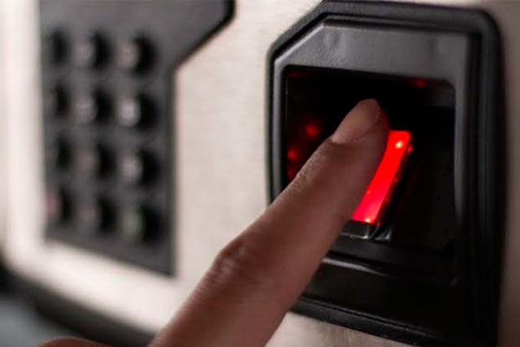

Bem-vindo ao [Nome do Software], a solução inovadora que está transformando a maneira como as empresas gerenciam seus Recursos Humanos. Entendemos que o capital humano é a espinha dorsal de qualquer organização, e é por isso que desenvolvemos um software poderoso e intuitivo projetado especificamente para atender às necessidades de sua empresa.
O serviço de bater o ponto é um processo fundamental na gestão de tempo e presença de funcionários em uma organização. A principal finalidade desse serviço é monitorar e controlar o cumprimento das horas de trabalho dos funcionários
Informações de contato da empresa.